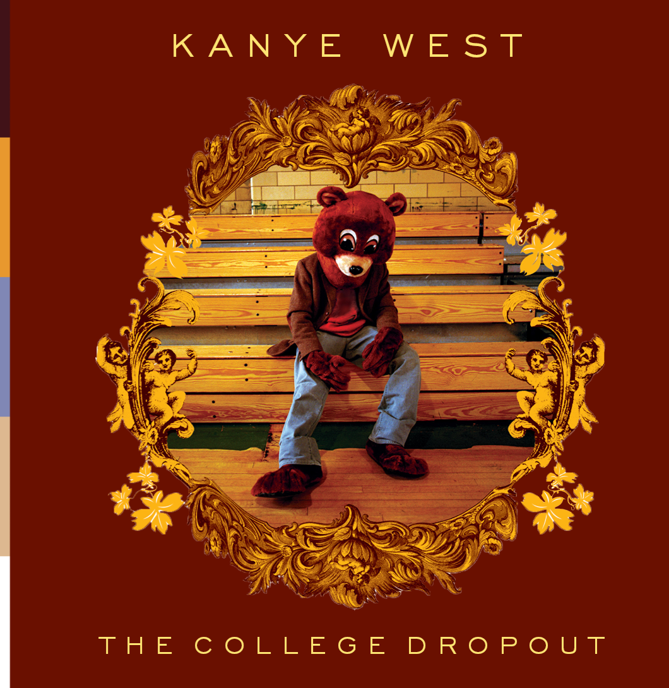
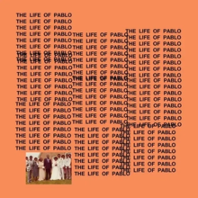
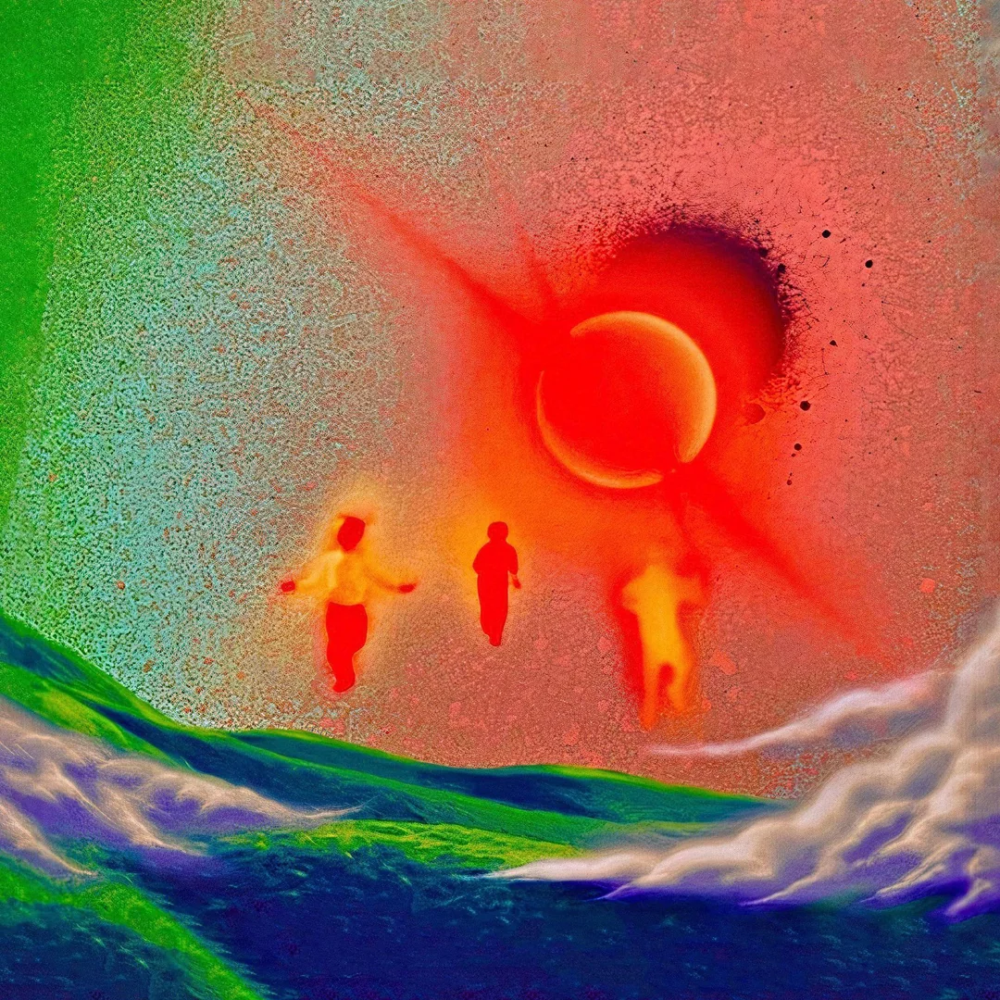

Kanye West Discography

The College Dropout (2004)
Kanye’s debut album disrupted the mainstream hip-hop narrative. In contrast to the gangsta rap dominating the charts, The College Dropout introduced a more introspective and personal approach. With soulful beats, gospel choirs, and themes like self-doubt, family, and societal pressures, Kanye’s lyrics resonated with listeners who felt out of place in traditional success paths.
Signature Track: “Jesus Walks” — A daring and bold expression of faith and inner struggle, it showed Kanye's willingness to push boundaries from the start.

Late Registration (2005)
Collaborating with composer Jon Brion, Kanye introduced orchestral arrangements and live instrumentation to hip-hop, creating a lush, cinematic sound. Late Registration elevated his music to a new level of artistry. Lyrically, Kanye became more socially conscious, addressing issues like wealth inequality and the flaws of the education system.
Signature Track: “Diamonds from Sierra Leone” — Not just a hit, but also a reflection on the conflict of materialism and the human cost of luxury.

Graduation (2007)
With Graduation, Kanye moved toward a more electronic and arena-ready sound, influenced by European house music and artists like Daft Punk. The album was a celebration of his ascent to superstardom, while also showcasing his evolving production techniques, incorporating synthesizers and anthemic melodies that aimed to fill stadiums.
Signature Track: “Stronger” — A fusion of hip-hop and electro, this song redefined what a rap track could sound like, blurring the lines between genres.

808s & Heartbreak (2008)
This album marked a significant departure from traditional hip-hop, as Kanye turned to auto-tuned vocals and sparse, melancholic beats to express personal pain and vulnerability. After the loss of his mother and the end of a long-term relationship, 808s & Heartbreak channeled Kanye’s emotional turmoil into a haunting, minimalist soundscape that would go on to influence an entire generation of artists like Drake and Kid Cudi.
Signature Track: “Heartless” — A raw portrayal of heartbreak, using auto-tune not just as an effect, but as an emotional instrument.

My Beautiful Dark Twisted Fantasy (2010)
Often hailed as Kanye's magnum opus, My Beautiful Dark Twisted Fantasy is an opulent and grandiose exploration of fame, power, and personal demons. Kanye blended baroque orchestration, guest features, and deeply introspective lyrics to create a masterpiece that critics and fans alike viewed as his artistic peak. The album is a reflection on his internal conflict—balancing the ego of a superstar with moments of self-doubt and vulnerability.
Signature Track: “Runaway” — A nine-minute epic where Kanye reflects on his flaws and failed relationships, cementing his role as both a provocateur and a poet.

Yeezus (2013)
Kanye took another bold leap with Yeezus, stripping down his sound to raw, industrial beats. Inspired by punk and electronic music, the album was abrasive, defiant, and rebellious. Kanye’s use of distorted sounds and minimal production contrasted sharply with the maximalism of My Beautiful Dark Twisted Fantasy. Yeezus embraced chaos and experimentation, further pushing the boundaries of hip-hop.
Signature Track: “Black Skinhead” — A politically charged anthem that blends primal drumming and intense lyrics, reflecting Kanye’s rage at societal issues and personal struggles.

The Life of Pablo (2016)
With The Life of Pablo, Kanye experimented with a more fragmented, free-flowing style, reflecting the era of streaming and digital media. The album was chaotic yet beautiful, mixing gospel influences with trap beats and introspective moments. Kanye described it as “a living, breathing, changing creative expression” as he continued to update and remix the album even after its release, reflecting his perfectionist tendencies and changing artistic vision.
Signature Track: “Ultralight Beam” — A gospel-infused anthem, featuring a choir and spiritual themes, it’s one of Kanye’s most emotional and uplifting tracks.

Ye (2018)
Kanye's more recent works showcase a shift toward introspection and spirituality. Ye is deeply personal, touching on his struggles with mental health.
Signature Track: “Ghost Town” — A song that captures the essence of freedom and the struggle against personal demons, combining raw emotion with an uplifting melody.

Jesus Is King (2019)
This album marks a turn towards gospel music, reflecting Kanye’s journey toward faith and redemption. The minimalist production and focus on spiritual themes highlight a more reflective and subdued Kanye, different from the brash, controversial figure of earlier years.
Signature Track: “Selah” — A powerful, gospel-driven song, featuring biblical references and Kanye’s exploration of his faith.

Donda (2021)
Named after his late mother, Donda is one of Kanye's most personal projects, blending introspection, grief, and spirituality. The sprawling album is an exploration of his complex emotions, family legacy, and artistic freedom.
Signature Track: “Hurricane” — A reflection on personal and spiritual struggles, featuring haunting melodies and introspective lyrics.